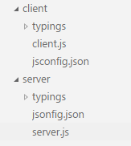
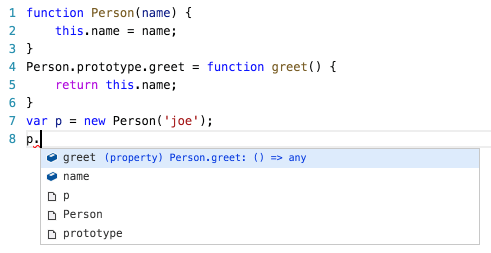
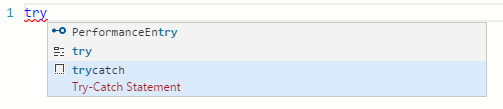
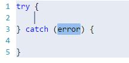

JavaScript
Rich Editing Support 丰富的编辑支持
Visual Studio Code uses the TypeScript language service to make authoring JavaScript easy. In addition to syntactical features like format, format on type and outlining, you also get language service features such as Peek, Go to Definition, Find all References, and Rename Symbol.
Visual Studio Code使用TypeScript语言服务以简单地创作JavaScript。除了一般的语法内容例如格式、对于类型的格式化、缩略图以外，你还将获得其他语言服务内容包括一瞥，转到定义，找到所有引用，以及重命名符号。
JavaScript Projects (jsconfig.json) JavaScript 项目（jsconfig.json）
VS Code's JavaScript support can operate in two different modes:
VS Code的JavaScript支持可以在两种模式下运行：
File Scope - no jsconfig.json: In this mode, JavaScript files opened in Visual Studio Code are treated as independent units. As long as a file
a.jsdoesn't reference a fileb.tsexplicitly (either using /// reference directives or CommonJS modules), there is no common project context between the two files.文件范围 - 没有jsconfig.json：在这一模式下，在Visual Studio Code中打开的JavaScript文件被视为独立的单元。只要一个文件“a.js”没有显性的引用一个文件“b.js”（无论是使用/// reference directives还是使用CommonJS modules)，两个文件之间没有共同的项目内容。
Explicit Project - with jsconfig.json: A JavaScript project is defined via a
jsconfig.jsonfile. The presence of such a file in a directory indicates that the directory is the root of a JavaScript project. The file itself can optionally list the files belonging to the project, the files to be excluded from the project, as well as compiler options (see below).显性项目 - 包含jsconfig.json：一个JavaScript项目通过“jsconfig.json”文件进行定义。在一个目录下存在这样一个文件即表明这是一个JavaScript项目的根目录。这个文件本身可以可选择的列出包含在这个项目的文件，也可以包含项目中剔除的文件，以及编译器选项。（见下）
The JavaScript experience is much better when you have a jsconfig.json file in your workspace that defines the project context. For this reason, we provide a hint to create a jsconfig.json file when you open a JavaScript file in a fresh workspace. The jsconfig.json file corresponds to a TypeScript project tsconfig.json file with the attribute allowJS implicitly set to true. If no files attribute is present, then this defaults to including all files in the containing directory and subdirectories. When a files attribute is specified, only those files are included.
当在你的工作空间中有一个“jsconfig.json”文件以定义项目内容时，JavaScript的体验会更佳。因此，当你在一个新的工作空间中打开JavaScript文件时，我们会提供一个建立“jsconfig.json”文件的提示。当“jsconfig.json”文件和TypeScript项目的 tsconfig.json文件协同工作时，其allowJS属性隐性地设为真。如果file属性不存在，则默认地将目录及子目录下的所有文件包括进徐昂目中，如果file属性存在，则按照他的值包括。
Make sure that you place the jsconfig.json at the root of your JavaScript project and not just at the root of your workspace. Below is a jsconfig.json file which defines the JavaScript target to be ES6 and the exclude attribute excludes the node_modules folder.
请确定你讲“jsconfig.json”文件放在了你的JavaScript项目的根目录下，而不仅仅是你的工作空间根目录。以下是一个“jsconfig.json”文件，他定义了JavaScript的“target”为“ES6”，以及用“exclude”属性排除了“node_modules”文件夹。
{
"compilerOptions": {
"target": "ES6"
},
"exclude": [
"node_modules"
]
}
Here is an example with an explicit files attribute.
本案例包括了一个显性的“files”属性。
{
"compilerOptions": {
"target": "ES6"
},
"files": [
"src/app.js"
]
}
The files attribute cannot be used in conjunction with the exclude attribute. If both are specified, the files attribute takes precedence.
“files”属性不能与“exclude”属性同时出现，如果两者都有的话，“文件”属性优先度较高。
In more complex projects, you may have more than one jsconfig.json file defined inside a workspace, as illustrated in below for a project with a client and server folder, that are a separate project context:
在更复杂的项目中，你也许在一个工作空间中会有不止一个“jsconfig.json”文件，正如如下所示的一个项目，他包含了一个“client”文件夹和一个“server”文件夹，他们是分开的项目环境。

Excludes 排除
Whenever possible, you should exclude folders with JavaScript files that are not part of the source code for your project.
任何时候，你都应该将并非你项目源代码的JavaScript文件所在的文件夹排除出去。
Note: If you do not have a
jsconfig.jsonin your workspace, VS Code will by default exclude thenode_modulesfolder and the folder defined by theoutattribute.注: 如果在你的工作空间没有“jsconfig.json”文件，VS Code会默认地排除“node_modules”文件夹以及被“out”属性定义的文件夹。
Below is a table mapping common project components to their installation folders which are recommended to exclude:
以下表格表明了一个常见项目的构件，以及安装文件夹中推荐排除的：
| Component | folder to exclude |
|---|---|
node |
exclude the node_modules folder |
webpack, webpack-dev-server |
exclude the content folder, e.g., dist. |
bower |
exclude the bower_components folder |
ember |
exclude the tmp and temp folders |
jspm |
exclude the jspm_packages folder |
| 构件 | 排除的文件夹 |
|---|---|
node |
排除“node_modules”文件夹 |
webpack, webpack-dev-server |
排除内容文件夹，例如“dist” |
bower |
排除“bower_components”文件夹 |
ember |
排除“tmpandtemp”文件夹 |
jspm |
排除“jspm_packages”文件夹 |
When your JavaScript project is growing too large, it is often because of library folders like node_modules. If VS Code detects that your project is growing too large, it will prompt you to edit the exclude list.
当你的JavaScript项目变得过大的时候，其原因经常是因为库文件夹比如说“node_modules”。如果VS Code发现你的项目过大时，他会建议你编辑“exclude”名单。
Tip: Sometimes changes to configuration, such as adding or editing a
jsconfig.jsonfile are not picked up correctly. Running the Reload Java Script command should reload the project and pick up the changes.Tip: 有时会对于配置的改变，比如添加或者编辑“jsconfig.json”文件会发生错误。进行Reload Java Script（重新载入Java Script）命令来重新载入项目，并且更新改动。
jsconfig Options jsconfig选项
Below are jsconfig options to configure the JavaScript language support.
以下是jsconfig选项，他用来配置JavaScript语言支持功能。
| Option | Description |
|---|---|
noLib |
Do not include the default library file (lib.d.ts) |
target |
Specifies which default library (lib.d.ts) to use. The values are "ES3", "ES5", "ES6". |
experimentalDecorators |
Enables experimental support for proposed ES decorators. |
allowSyntheticDefaultImports |
Allow default imports from modules with no default export. This does not affect code emit, just typechecking. |
| 选项 | 描述 |
|---|---|
noLib |
不要包含默认的库文件（lib.d.ts） |
target |
指明使用哪一个默认库（lib.d.ts）。可选的值包括“ES3”，“ES5”，“ES6” |
experimentalDecorators |
为制定的ES指示器启用实验性的支持 |
allowSyntheticDefaultImports |
允许对没有默认出口的模块进行默认输入。这一选项不会影响代码发布，只是字面检查 |
IntelliSense 智能感知
The JavaScript Support uses different strategies to provide IntelliSense.
JavaScript支持使用不同的策略进行智能感知。
IntelliSense based on type inference 基于类型推理的智能感知
JavaScript uses the same inference as TypeScript to determine the type of a value.
JavaScript使用与TypeScript相同的推理机制来判断一个值的类型。
The following patterns are also recognized:
以下的模式也是被承认的：
- "ES3-style" classes, specified using a constructor function and assignments to the prototype property.
CommonJS-style module patterns, specified as property assignments on the exports object, or assignments to the
module.exportsproperty."ES3-style" 使用构造函数并且对原型属性赋值，以此进行规定的类。
- CommonJS风格的模块，对出口对象属性赋值或是通过赋值“module.exports”属性，以此进行规定的类。
The AMD (Asynchronous Module Definition) module pattern is currently not supported.
AMD（异步模块定义）模块模式现在不被支持。
IntelliSense offers both inferred proposals and the global identifiers of the project. The inferred symbols are presented first, followed by the global identifiers (with the document icon), as you can see in the image below.
智能感知既可以提供推断的建议，也可以提供这一项目中使用的全局标识符。其中推断的将首先显示，然后是全局标识符（伴随着文档图标），如下图所示。

JSDoc annotations JSDoc 注释
Where type inference does not provide the desired type information, (or just for documentation purposes), type information may be provided explicitly via JSDoc annotations.
当类型推断无法提供想要的类型信息时，（或者仅仅是为了文档目的），类型信息可能通过JSDoc注释明确地提供。
This document describes the JSDoc annotations currently supported.
这一文档描述了现在支持的JSDoc注释。
TypeScript definition file TypeScript定义文件
You can also get IntelliSense for libraries through the use of type definition .d.ts files. DefinitelyTyped is a repository of typings files for all major JavaScript libraries and environments. The typings are easily managed using Typings, the TypeScript Definition manager.
你也可以通过使用类型定义 .d.ts文件获得智能感知对库的支持。DefinitelyTyped是一个包含了现主要JavaScript库和环境类型文件的文档库。这些类型文件可以简单地使用TypeScript定义管理器，Typings，进行管理。
For example typings install --ambient node installs all the typings for the built-in Node.js modules. If your project has a jsconfig.json file, then make sure that typings is contained in the project context defined by the location of the jsconfig.json file. If you have no jsconfig.json, then you need to manually add a /// reference to the .d.ts from each JavaScript file.
比如说，
Tip: When you want to use ES6 style imports but the typings do not yet use ES6 style exports, then set the TypeScript compiler option
allowSyntheticDefaultImportsto true.
{
"compilerOptions": {
"target": "ES6",
"module": "commonjs",
"allowSyntheticDefaultImports": true
},
"exclude": [
"node_modules"
]
}
Mixed TypeScript and JavaScript projects
It is now possible to have mixed TypeScript and JavaScript projects. Existing JavaScript code using the CommonJS module format, may be imported and consumed by TypeScript code using the ECMAScript 2015 module syntax. Conversely, TypeScript code written to provide a well-defined API contract for a service, may be referenced by JavaScript code that is written to call that service, thus providing rich IntelliSense at design time.
To enable JavaScript inside a TypeScript project, you can set the allowJs property to true in the TypeScript project's tsconfig.json file.
Compiling JavaScript down-level
One of the key features TypeScript provides is the ability to use the latest JavaScript language features, and emit code that can execute in JavaScript runtimes that don't yet understand those newer features. With JavaScript using the same language service, it too can now take advantage of this same feature.
The TypeScript compiler tsc can down-level compile JavaScript files from ES6 to another language level. Configure the jsconfig.json with the desired options and then use the –p argument to make tsc use your jsconfig.json file, e.g. tsc -p jsconfig.json to down-level compile.
The following compiler options in jsconfig.json apply when tsc is used for down level compiling of ES6 JavaScript to an older version:
| Option | Description |
|---|---|
module |
Specify module code generation. The values are "commonjs", "system", "umd", "amd", "es6", "es2015" |
diagnostics |
Show diagnostic information. |
emitBOM |
Emit a UTF-8 Byte Order Mark (BOM) in the beginning of output files. |
inlineSourceMap |
Emit a single file with source maps instead of having a separate file. |
inlineSources |
Emit the source alongside the sourcemaps within a single file; requires --inlineSourceMap to be set. |
jsx |
Specify JSX code generation: "preserve" or "react". |
reactNamespace |
Specifies the object invoked for createElement and __spread when targeting 'react' JSX emit. |
mapRoot |
Specifies the location as an uri in a string where debugger should locate map files instead of generated locations. |
noEmit |
Do not emit output. |
noEmitHelpers |
Do not generate custom helper functions like __extends in compiled output. |
noEmitOnError |
Do not emit outputs if any type checking errors were reported. |
noResolve |
Do not resolve triple-slash references or module import targets to the input files. |
outFile |
Concatenate and emit output to single file. |
outDir |
Redirect output structure to the directory. |
removeComments |
Do not emit comments to output. |
rootDir |
Specifies the root directory of input files. Use to control the output directory structure with --outDir. |
sourceMap |
Generates corresponding '.map' file. |
sourceRoot |
Specifies the location where debugger should locate JavaScript files instead of source locations. |
stripInternal |
`do not emit declarations for code that has an '@internal' annotation. |
watch |
Watch input files. |
emitDecoratorMetadata |
Emit design-type metadata for decorated declarations in source. |
noImplicitUseStrict |
Do not emit "use strict" directives in module output. |
JavaScript Formatting
VS Code provides several formatting settings for JavaScript. They can all be found in the javascript.format settings name space.
// Defines space handling after a comma delimiter
"javascript.format.insertSpaceAfterCommaDelimiter": boolean,
// Defines space handling after a semicolon in a for statement
"javascript.format.insertSpaceAfterSemicolonInForStatements": boolean,
// Defines space handling after a binary operator
"javascript.format.insertSpaceBeforeAndAfterBinaryOperators": boolean,
// Defines space handling after keywords in control flow statement
"javascript.format.insertSpaceAfterKeywordsInControlFlowStatements": boolean,
// Defines space handling after function keyword for anonymous functions
"javascript.format.insertSpaceAfterFunctionKeywordForAnonymousFunctions": boolean,
// Defines space handling after opening and before closing non empty parenthesis
"javascript.format.insertSpaceAfterOpeningAndBeforeClosingNonemptyParenthesis": boolean,
// Defines space handling after opening and before closing non empty brackets
"javascript.format.insertSpaceAfterOpeningAndBeforeClosingNonemptyBrackets": boolean,
// Defines whether an open brace is put onto a new line for functions or not
"javascript.format.placeOpenBraceOnNewLineForFunctions": boolean,
// Defines whether an open brace is put onto a new line for control blocks or not
"javascript.format.placeOpenBraceOnNewLineForControlBlocks": boolean,
Snippets for JavaScript
VS Code has several built-in snippets that will come up as you type or you can press kb(editor.action.triggerSuggest) (Trigger Suggest) and you will see a context specific list of suggestions.

Selecting the snippet with kbstyle(Tab) results in:

Tip: You can add in your own User Defined Snippets for JavaScript. See User Defined Snippets to find out how.
Run Babel inside VS Code
The Babel transpiler turns ES6 files into readable ES5 JavaScript with Source Maps. You can easily integrate Babel into your workflow by adding this code to your tasks.json file (located under the workspace's .vscode folder). The isBuildCommand switch makes this task the Task: Run Build Task gesture. isWatching tells VS Code not to wait for this task to finish. To learn more, go to Tasks.
{
"version": "0.1.0",
"command": "${workspaceRoot}/node_modules/.bin/babel",
"isShellCommand": true,
"tasks": [
{
"args": ["src", "--out-dir", "lib", "-w", "--source-maps"],
"taskName": "watch",
"suppressTaskName": true,
"isBuildCommand": true,
"isWatching": true
}
]
}
Once you have added this, you can start Babel with the kb(workbench.action.tasks.build) (Run Build Task) command and it will compile all files from the src directory into the lib directory.
JSX and React Native
VS Code supports JSX and React Native. To get IntelliSense for React/JSX, install the typings for react-global by running typings install --ambient react-global from the terminal. To get IntelliSense for React Native, run typings install --ambient react-native.
React Native examples often use the experimental Object Rest/Spread operator. This is not yet supported by VS Code. If you want to use it, it is recommended that you disable the built-in syntax checking (see below).
To enable ES6 import statements for React Native, you need to set the allowSyntheticDefaultImports compiler option to true. This tells the compiler to create synthetic default members and you get IntelliSense. React Native uses Babel behind the scenes to create the proper run-time code with default members. If you also want to do debugging of React Native code then you can install the React Native Extension.
Disable Syntax Validation when using non ES6 constructs
Some users want to use syntax constructs like the proposed Object Rest/Spread Properties. However, these are currently not supported by VS Code's JavaScript support and are flagged as errors. For users who still want to use these future features, we provide the javascript.validate.enable setting. With javascript.validate.enable: false you disable all built-in syntax checking. If you do this, we recommend that you use a linter like ESLint to validate your code. Since the JavaScript support doesn't understand ES7 constructs, features like IntelliSense might not be fully accurate.
JavaScript Linters (ESLint, JSHint)
VS Code provides support for ESLint and JSHint via extensions. If enabled, the JavaScript code is validated as you type and reported problems can be navigated to and fixed inside VS Code.
To enable one of the linters, do the following:
- Install the corresponding linter globally or inside the workspace folder that contains the JavaScript code to be validated. For example, using
npm install -g eslintornpm install -g jshint, respectively. - Install the ESLint or JSHint extension. The linter is enabled after installation. You can disable a linter via the corresponding settings
"eslint.enable": trueor"jshint.enable": true, respectively. - Use a
.eslintrc.jsonor.jshintrcfile in the root of your workspace to configure the linter. You can useeslint --initto create an initial version of the.eslintrc.jsonfile.
Tip: You get IntelliSense and hovering inside the
.eslintrc.jsonand the.jshintrcfiles.
It is recommended that you enable the linter rules that warn about undefined and unused variables.
In JSHint:
"undef": true,
"unused": true,
In ESLint:
"no-undef": 1,
"no-unused-vars": 1,
Next Steps
Read on to find out about:
- TypeScript - VS Code has great support for TypeScript which brings structure and strong typing to your JavaScript code, without compromising the good parts.
Common Questions
Q: Can I debug minified/uglified JavaScript?
A: Yes, you can.